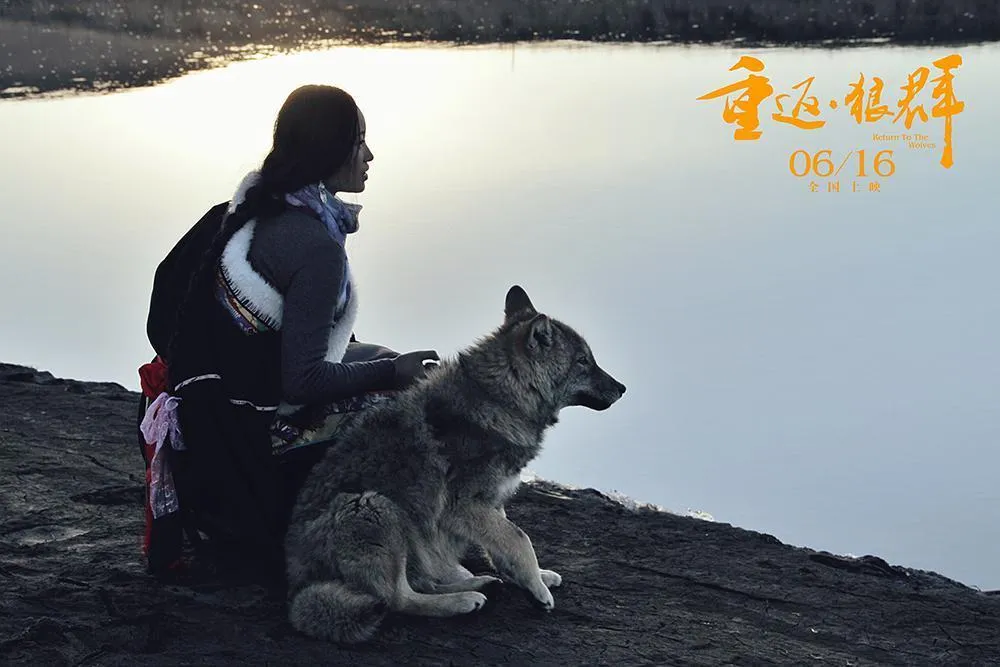

真实性是新闻的生命，这是马克思主义新闻观的根本信条之一。《重返狼群》的真实性首先建立在真实基地上，影片中所有镜头均为真人实景拍摄，完整记录了从捡狼到送狼回归的整个过程。
更为重要的是，它的真实性超越了物理层面的“如实记录”，直抵“生命真实”的深层意涵。影片记录了格林为生病的李微漪守窗不眠、在冰原上牵马救人等细节——这些跨越物种的情感互动并非人为设计，而是在长达数年的陪伴中自然生发的真实瞬间。这种对真实的执着追求，正是马克思主义新闻观“根据事实来描述事实”原则在影像叙事中的生动实践。
人民性是马克思主义新闻观的基础。《重返狼群》的独特之处在于，它不满足于“反映”人民关切，而是主动参与“塑造”人民的生态认知。
影片所塑造的格林聪明、勇敢、富有感情，打破了人们对狼的传统恐惧。
片中李微漪与亦风面对盗猎的猖獗、草场的退化，发出了沉重的诘问：“我们救了一匹狼的性命，我们能改变狼的命运吗？”这一发问将个人叙事提升至公共议题层面，推动生态保护从“个体的道德选择”转化为“社会的集体行动”。
纪录片在潜移默化中完成了价值观的引领，使“保护生态、尊重生命”不仅成为个人内心的道德律令，更沉淀为全社会共同的文化共识。
坚持正确舆论导向是马克思主义新闻观的核心理念之一。片中最深刻的社会启蒙力量，在于它实现了“狼的故事”向“人的反思”的视角转换。
这句旁白以超越物种的情感张力，构成对盗猎行为无声而有力的控诉。这种控诉不是居高临下的道德审判，而是以真实的情感张力引发观众的自我反思。影片从人与狼的微观关系中折射出人与自然和谐共生的宏大命题，为全球生态传播贡献了具有中国温度的叙事范式。
如果说“真实性”关乎作品的根基，“人民性”关乎温度，“正确导向”关乎方向，那么“党性原则”则是马克思主义新闻观的灵魂所在。
《重返狼群》并非直接宣传党的方针政策，却与党在生态文明建设领域的战略部署形成了深刻的实践呼应。党的十八大以来，生态文明建设被纳入中国特色社会主义事业，“绿水青山就是金山银山”的理念深入人心。党的二十大进一步强调“人与自然和谐共生”是中国式现代化的本质特征之一。
影片所记录的故事——从救下孤狼到助其重返自然——与国家战略在精神层面同频共振。它用个体生命的真实故事，生动诠释了党推动生态文明建设、构建人与自然和谐关系的宏观主张。
纪录片作为一种综合性的艺术样式，是现实生活的见证，具有影像叙述和社会记忆的功能。《重返狼群》以其对真实性近乎执拗的坚守、对人民生态觉醒的深度呼应、对正确舆论导向的精准承载、对党生态文明战略的影像共鸣，在多个维度上与马克思主义新闻观的精神内核形成了深刻的对话。
从“一匹狼的故事”出发，我们看到的是一种“中国表达”的独特叙事力量。在马克思主义新闻观中国化、时代化、大众化的进程中，《重返狼群》提供了一个珍贵而动人的影像注脚。
